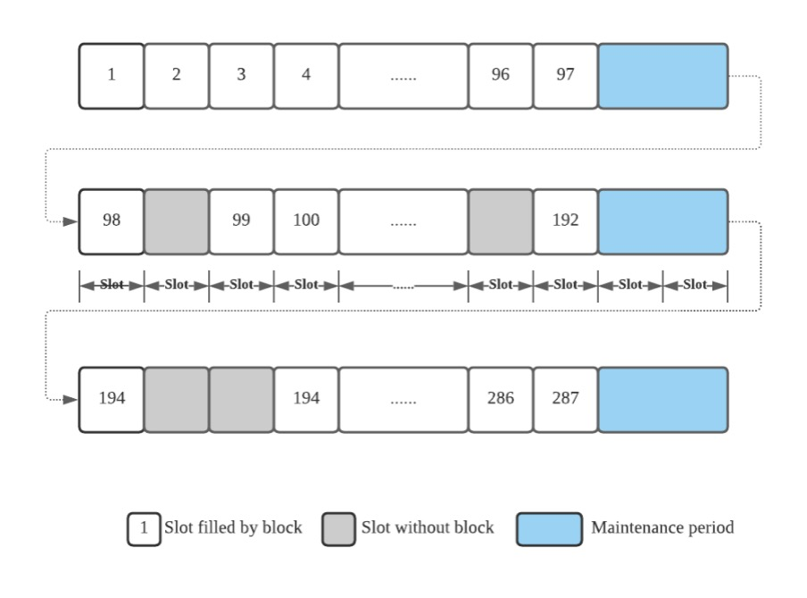
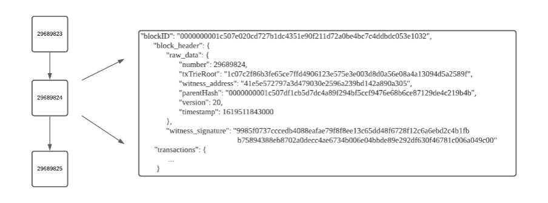
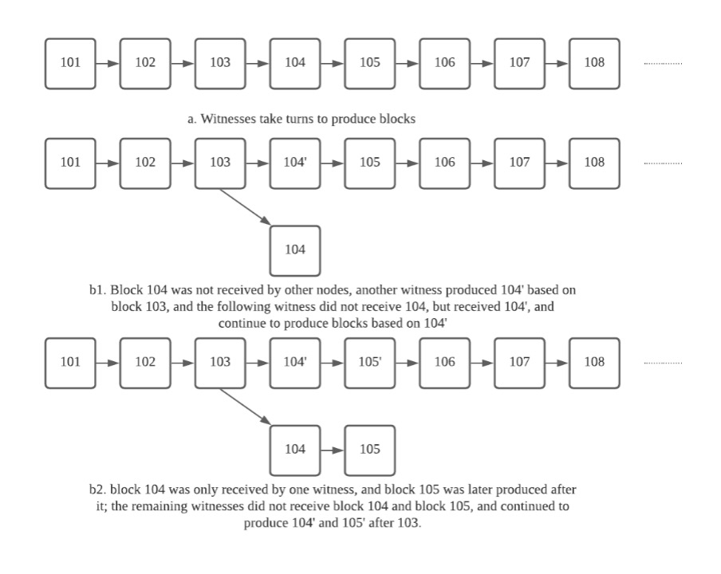

共识
概述
区块链是一个分布式记账系统。 在一个区块链系统中可以有成千上万个节点，每个节点独立存储相同的账本。 如果要将新的交易数据写入账本，需要得到这些节点的批准。 在不可信的分布式环境中实现这一目标是一项复杂的系统性任务。 区块链系统正常运作意味着区块链中的每个节点始终保持相同的账本，前提是系统中大多数节点是诚实可靠的。 为了确保诚实可靠的节点能够共同监督写入账本的交易数据，每个区块链系统都需要建立其共识机制，相当于区块链的宪法。 只要绝大多数节点遵循共识要求，即使在不可信的分布式环境中，也能保证结果无疑是可信的。 因此，共识是诚实节点为维护区块链稳定性而达成的协议。
不同的区块链系统会有独特的实现方式。 共识机制有多种类型，最常用的有 POW、POS 和 DPoS。 本文将主要介绍波场所基于的 DPoS 共识机制，并解释 DPoS 的基本组成部分和机制。
区块生产过程
区块链网络的见证人会收集区块链网络中新生成的交易，验证这些交易的合法性，然后将交易打包到一个区块中，将其记录为账本上的新一页， 并将此页面广播到整个区块链网络。接下来，其他节点会接收到这个新页面，并验证页面上交易数据的合法性，然后将其添加到自己的账本中。 最后，见证人会重复此过程，以便区块链系统中的所有新交易数据都能被记录在账本中。
DPoS 概述
共识的作用是选择区块链系统中的见证人。 见证人验证交易数据，维护账本，将新账本广播给网络中的其他节点，并获得其他节点对新账本的批准。 作为共识的一种具体实现，DPoS 按以下方式运行：
DPoS 共识根据收到的票数在区块链系统中选出一些节点作为见证人。 首先，当区块链系统开始运行时，将发行一定数量的通证，然后这些通证将分配给区块链系统中的节点。 接着，节点可以用部分通证申请成为区块链系统中的见证人候选人。 区块链系统中任何持有通证的节点都可以为这些候选人投票。 每经过 t 个周期，将统计所有候选人的票数。 票数最多的前 N 个候选节点将在接下来的 t 个周期中成为见证人。 t 个周期后，将再次统计票数选出新的见证人，如此循环往复。
让我们看看这在波场中的实现方式：
定义
- 波场：指波场网络。本文档不区分波场、波场区块链、波场区块链系统等。
- 波场通证：指由波场发行并在波场中流通的权益通证，称为 TRX。
- 见证人候选人：有资格成为波场见证人的节点。
- 见证人：波场中负责记账的节点。在 DPoS 中通常称为见证人。波场中将有27个见证人，也称为超级节点（或 SR）。在此，我们不区分记账人、见证人、超级节点、SR等。
- 记账：验证交易并将其记录在账本中的过程。由于在波场中区块承载账本，记账过程也称为区块生成。本文档中不区分记账和区块生成。
- 记账顺序：即区块生成顺序。27个见证人按收到的票数多少排列。
- 槽位：在波场中，每3秒视为一个槽位。在正常情况下，每个 SR 会在对应的槽位时间内生成一个区块。因此，波场的平均区块间隔约为3秒。如果某个 SR 因某种原因未能生成区块，该槽位将空缺，下一个 SR 会在下一个槽位中生成区块。在维护期间，区块生成将跳过两个槽位。
- 纪元：波场将一个纪元设定为6小时。纪元的最后两个区块时间是维护期，在此期间将决定下一个纪元的区块生成顺序。
- 维护期：波场将该时期设为两个区块时间，即6秒。此时期用于统计候选人的票数。24小时内有4个纪元，自然也有4个维护期。见证人在维护期暂停生成区块。下一个纪元的区块生成顺序将在维护期内决定。

选举机制
- 投票 - 在波场中，1TRX 等于一票。
- 投票过程 - 在波场中，为候选人投票是一种特殊交易。节点可以通过生成投票交易为候选人投票。
- 计票 - 在每个维护期间，将统计候选人的票数。得票最多的前27名候选人将成为下一个纪元的见证人。
区块生成机制
在每个纪元期间，27个见证人将根据记账顺序轮流生成区块。 每个见证人只能在其轮到时生成区块。 见证人将多个验证过的交易数据打包到每个区块中。 见证人会用其私钥对该区块的数据进行签名，并将见证人签名、见证人地址、区块高度、区块生成时间等信息填写到区块中。 每个新区块将包含上一个区块的哈希值作为父哈希。
通过存储前一个区块的哈希值，区块在逻辑上连接起来，最终形成一条链。下图展示了一个典型的区块链结构：

在理想情况下，基于DPoS共识的区块链系统中的记账过程按照预先计算的记账顺序进行。 见证人依次生成区块（见图a）。然而，区块链网络是一个分布式且不可信的复杂系统，主要体现在以下三个方面：
- 由于网络环境不佳，某些见证人生成的区块在无效时间无法被其他见证人接收（见图b1和b2）。
- 无法始终保证某个见证人的正常运行（见图c）。
- 一些恶意见证人会生成分叉区块以便分叉链（见图d）。


如上所述，区块链系统正常运作的基础是系统中大多数节点是诚实且可靠的。
此外，区块链系统安全性的主要保证是账本的安全性，这意味着不能恶意将非法数据写入账本，并且每个节点上保存的账本副本应保持一致。
基于DPoS共识，记账过程由见证人执行。
因此，波场的安全性取决于大多数见证人的可靠性。
波场在系统中设置了不可逆的确认区块。同时，为了抵御少数见证节点的恶意行为，波场依据“最长链原则”将最长链识别为主链。
确认区块原则
新生成的区块是未确认的。
只有那些被27个见证人中超过70%（即27 * 70% = 19，向上取整）“批准”的区块才被视为不可逆区块，通常称为固化区块。
整个区块链网络已确认固化区块中包含的交易。
“批准”未确认状态区块的方式是见证人在其之后生成后续区块。
这里需要强调的是，生成这18个区块的见证人与生成第103个区块的见证人必须不同。
最长链原则
当出现分叉时，诚实的见证人总是会选择在最长链上生成区块。
激励模型
波场设置了一个激励模型，以鼓励节点参与和网络扩展，从而确保区块链系统的安全高效运行。
完成区块生成任务的见证人将获得 TRX 奖励。
该模型还规定，每个由见证人生成的确认区块，见证人将获得 32TRX 的奖励。
此外，前127名得票最多的见证人（包括见证人候选人）将在每个 Epoch 的维护期间获得按比例分配的奖励。
基于提案的参数调整
DPoS 的一个显著特点是可以在链上提出任何参数调整，见证人将通过发起投票来决定是否批准该提案。
这种方法的优点是避免了在添加新功能时进行硬分叉升级。
目前，波场网络参数可参考此处或 Tronscan。
附录： 参考文件
- Delegated Proof of Stake (DPoS) – Total Beginners Guide
- Consensus Algorithms: Proof-of-Stake & Cryptoeconomics
- Role of Delegates
- What is Delegated Proof of Stake?